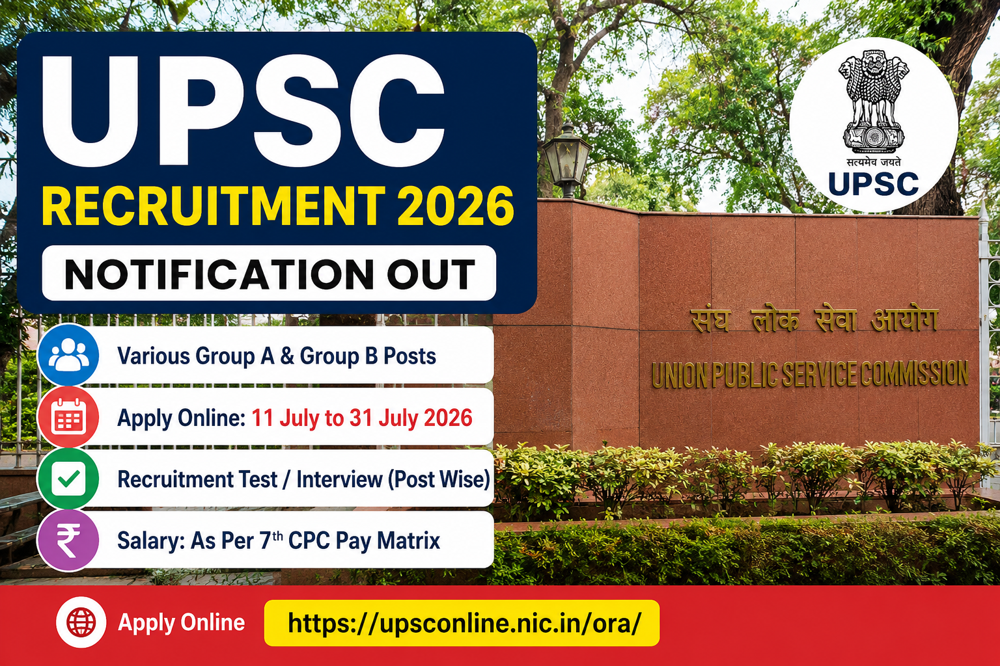

अगर आप केंद्र सरकार में प्रतिष्ठित पद पर नौकरी करने की तैयारी कर रहे हैं, तो आपके लिए शानदार अवसर आया है। संघ लोक सेवा आयोग (UPSC) ने Advertisement No. 08/2026 के तहत विभिन्न मंत्रालयों और विभागों में कई पदों पर सीधी भर्ती के लिए आधिकारिक अधिसूचना जारी कर दी है। इच्छुक एवं पात्र उम्मीदवार UPSC के Online Recruitment Application (ORA) पोर्टल के माध्यम से ऑनलाइन आवेदन कर सकते हैं। इस भर्ती अभियान के अंतर्गत अलग-अलग विभागों में विशेषज्ञ (Specialist), वैज्ञानिक, इंजीनियरिंग, प्रशासनिक एवं अन्य Group 'A' तथा Group 'B' पदों पर नियुक्तियां की जाएंगी। प्रत्येक पद के लिए शैक्षणिक योग्यता, अनुभव, आयु सीमा एवं वेतनमान अलग-अलग निर्धारित किया गया है। UPSC द्वारा जारी आधिकारिक नोटिफिकेशन के अनुसार ऑनलाइन आवेदन प्रक्रिया **11 जुलाई 2026** से प्रारंभ होगी तथा उम्मीदवार **31 जुलाई 2026 शाम 6:00 बजे** तक आवेदन कर सकेंगे। आवेदन केवल ऑनलाइन माध्यम से स्वीकार किए जाएंगे। यदि आप UPSC Recruitment 2026 के लिए आवेदन करना चाहते हैं तो आवेदन करने से पहले आधिकारिक नोटिफिकेशन को ध्यानपूर्वक पढ़ें। इस लेख में हमने भर्ती से जुड़ी सभी महत्वपूर्ण जानकारी जैसे Vacancy Details, Eligibility, Age Limit, Selection Process, Salary, Application Fee, Important Dates, Documents Required, Apply Process तथा Direct Links आसान भाषा में उपलब्ध कराई हैं।
| Particular | Details |
|---|---|
| Recruitment Organization | Union Public Service Commission (UPSC) |
| Advertisement Number | 08/2026 |
| Recruitment Type | Direct Recruitment |
| Post Name | Various Group A & Group B Posts |
| Application Mode | Online |
| Online Application Starts | 11 July 2026 |
| Last Date to Apply | 31 July 2026 (06:00 PM) |
| Selection Process | Recruitment Test / Interview (Post Wise) |
| Official Website | https://upsconline.nic.in/ora/ |
UPSC ने Advertisement No. 08/2026 जारी करते हुए विभिन्न मंत्रालयों एवं विभागों में अनेक पदों पर भर्ती प्रक्रिया शुरू कर दी है। उम्मीदवार केवल UPSC ORA Portal के माध्यम से ऑनलाइन आवेदन कर सकते हैं। आवेदन करने से पहले संबंधित पद की योग्यता, अनुभव, आयु सीमा तथा अन्य शर्तों की जांच करना अनिवार्य है। अंतिम तिथि के बाद किसी भी आवेदन पर विचार नहीं किया जाएगा।
इस भर्ती अभियान के माध्यम से केंद्र सरकार के विभिन्न मंत्रालयों एवं विभागों में अनेक Group 'A' एवं Group 'B' पदों पर भर्ती की जाएगी। सभी पदों की पात्रता एवं अनुभव अलग-अलग निर्धारित किए गए हैं। उम्मीदवार अपनी योग्यता के अनुसार संबंधित पद के लिए आवेदन कर सकते हैं।
UPSC Advertisement No. 08/2026 के अंतर्गत विभिन्न मंत्रालयों एवं विभागों में अनेक Group 'A' एवं Group 'B' पदों पर भर्ती की जाएगी। प्रत्येक पद के लिए शैक्षणिक योग्यता, अनुभव तथा आयु सीमा अलग-अलग निर्धारित की गई है। उम्मीदवार आवेदन करने से पहले संबंधित पद की पात्रता अवश्य जांच लें।
इस विज्ञापन में कुल रिक्तियों की संख्या विभिन्न पदों के अनुसार निर्धारित की गई है। प्रत्येक पद के लिए अलग-अलग विभाग, आरक्षण, अनुभव एवं योग्यता निर्धारित है। उम्मीदवार संबंधित पद का विस्तृत विवरण आधिकारिक विज्ञापन में देख सकते हैं।
| Post Name | Department |
|---|---|
| Assistant Soil Chemist | Department of Agriculture & Farmers Welfare |
| Assistant Public Prosecutor | Directorate of Prosecution |
| Specialist Grade III Assistant Professor | Ministry of Health & Family Welfare |
| Assistant Director | Central Government Department |
| Scientist / Technical Posts | Various Departments |
| Other Group 'A' & Group 'B' Posts | As Per Official Notification |
| Category | Application Fee |
|---|---|
| General / OBC / EWS | ₹25 |
| SC / ST / PwBD / Women | No Fee |
UPSC Recruitment 2026 के अंतर्गत प्रत्येक पद के लिए अधिकतम आयु सीमा अलग-अलग निर्धारित की गई है। अधिकांश पदों के लिए अधिकतम आयु सीमा लगभग 30 वर्ष से 50 वर्ष के बीच है। आरक्षित वर्गों को केंद्र सरकार के नियमानुसार आयु सीमा में छूट प्रदान की जाएगी। उम्मीदवार संबंधित पद की आयु सीमा की पुष्टि आधिकारिक विज्ञापन से अवश्य करें।
UPSC विभिन्न पदों के लिए चयन प्रक्रिया अलग-अलग अपनाता है। कुछ पदों पर केवल Interview के आधार पर चयन किया जाता है, जबकि कुछ पदों पर पहले Recruitment Test आयोजित किया जाता है। अंतिम चयन UPSC द्वारा निर्धारित प्रक्रिया के अनुसार किया जाएगा।
UPSC Recruitment 2026 के अंतर्गत चयनित उम्मीदवारों को संबंधित Group 'A' एवं Group 'B' पदों के अनुसार 7th Central Pay Commission (CPC) के तहत आकर्षक वेतनमान एवं अन्य सरकारी भत्ते प्रदान किए जाएंगे। प्रत्येक पद का Pay Level अलग-अलग निर्धारित किया गया है। विस्तृत वेतनमान संबंधित पद की आधिकारिक अधिसूचना में उपलब्ध है।
| Particular | Details |
|---|---|
| Pay Scale | As Per 7th CPC & UPSC Rules |
| Pay Level | Post Wise |
| Allowances | DA, HRA, TA & Other Government Benefits |
| Job Type | Permanent Central Government Job |
UPSC की भर्ती में अंतिम दिनों में वेबसाइट पर अधिक ट्रैफिक होने के कारण तकनीकी समस्याएं आ सकती हैं। इसलिए उम्मीदवारों को सलाह दी जाती है कि वे अंतिम तिथि का इंतजार न करें और समय रहते आवेदन प्रक्रिया पूरी कर लें। आवेदन सफलतापूर्वक जमा होने के बाद उसका प्रिंट आउट सुरक्षित रखें, क्योंकि भविष्य में Recruitment Test, Interview तथा Document Verification के दौरान इसकी आवश्यकता पड़ सकती है।
| Description | Link |
|---|---|
| Official Notification (Advertisement No. 08/2026) | Download Notification |
| Apply Online (ORA) | Apply Online |
| Official Website | Visit UPSC Website |
ऑनलाइन आवेदन प्रक्रिया 11 जुलाई 2026 से शुरू होगी।
उम्मीदवार 31 जुलाई 2026 शाम 6:00 बजे तक ऑनलाइन आवेदन कर सकते हैं।
नहीं। प्रत्येक पद के लिए शैक्षणिक योग्यता, अनुभव एवं आयु सीमा अलग-अलग निर्धारित की गई है।
चयन संबंधित पद के अनुसार Recruitment Test, Interview तथा Document Verification के आधार पर किया जाएगा।
उम्मीदवार UPSC के ORA Portal के माध्यम से ऑनलाइन आवेदन कर सकते हैं।
Disclaimer: इस लेख में दी गई जानकारी UPSC द्वारा जारी आधिकारिक Advertisement No. 08/2026 के आधार पर तैयार की गई है। आवेदन करने से पहले उम्मीदवार संबंधित पद की विस्तृत अधिसूचना अवश्य पढ़ें। अंतिम निर्णय एवं नियम UPSC द्वारा जारी आधिकारिक सूचना के अनुसार ही मान्य होंगे।